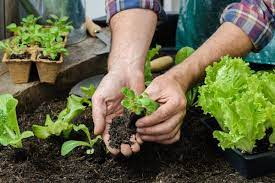

Inicio
Nosotros
Contacto
Formulario
Sucursales
Huerta Familiar
Beneficios de construirla

El Huerto Familiar es una metodología para producir de forma sustentable y amigable al ambiente. Puede proporcionar a la familia, además de alimentos complementarios, otros productos, tales como: plantas medicinales, aromáticas, condimentos, flores, y otros, también ayudar a generar ingresos económicos adicionales. Cultivar nuestros propios vegetales es una de las mejores maneras de asegurar su acceso inmediato a alimentos frescos, ricos en nutrientes, inocuos y libres de sustancias químicas para una alimentación sana.